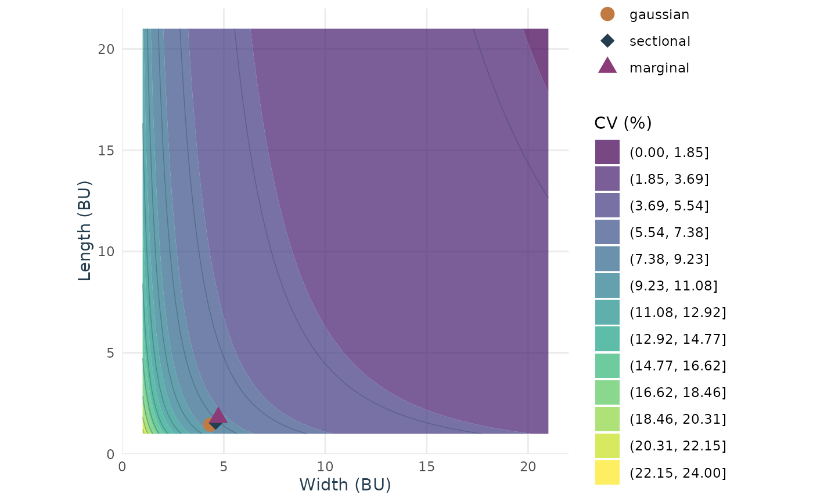

Integrates input checks, configurations, a weighted Smith estimate, CV-surface fitting, and the selected curvature or marginal-efficiency solution(s).
Arguments
- trial
Numeric yield matrix.
- unit_width_m, unit_length_m
Physical dimensions of one basic unit, in metres.
- sd
Either
"sample"or"population", for the descriptive CV.- min_plots
Minimum number of experimental units per configuration (at least two).
- criterion
Either
"both"(default; Gaussian and sectional),"gaussian","sectional","marginal", or"all"(the three criteria).- smith_method
Smith estimator method;
"smith1938"by default.- target_slope
Positive target decrease of the CV, in percentage points per basic unit along each coordinate. Used when
criterionis"marginal"or"all"; default 1.
Value
An object of class plotsizing_analysis: a list with trial,
descriptives, dimensions, long_data, smith, surface,
configurations, solution, basic_unit_dimensions_m and settings.
The solution includes widths and lengths in basic units and in metres.
It has print(),
summary() and
plot() methods.
Examples
result <- analyze_uniformity_trial(example_trial("rice"), criterion = "all")
result
#> Uniformity-trial analysis (plotsizing)
#>
#> Trial: 20 rows x 20 columns = 400 basic units of 1 x 1 m
#> Configurations: 35 (at least 2 plots each)
#> Smith (1938) b': 0.827
#> CV surface: CV = 22.95 * x^-0.608 * y^-0.232 (x = width, y = length, in basic units)
#>
#> Solutions (width, length in m; area in m2; CV in %):
#> criterion width length area cv
#> gaussian 4.34 1.45 6.28 8.63
#> sectional 4.60 1.54 7.10 8.21
#> marginal 4.73 1.81 8.54 7.78
result$solution
#> criterion width length area cv K width_ub length_ub
#> 1 gaussian 4.335096 1.448599 6.279817 8.631981 0.02558784 4.335096 1.448599
#> 2 sectional 4.599877 1.542882 7.097068 8.205307 0.02535289 4.599877 1.542882
#> 3 marginal 4.730074 1.805704 8.541114 7.777921 0.02394040 4.730074 1.805704
#> area_ub area_m2
#> 1 6.279817 6.279817
#> 2 7.097068 7.097068
#> 3 8.541114 8.541114
summary(result)
#> Basic-unit yields:
#> n_ub rows columns mean std_dev cv_ub minimum maximum skewness excess_kurtosis
#> 400 20 20 429.6 95.69 22.27 166 704 0.2242 -0.2775
#>
#> Smith (1938) variance law:
#> method b_prime n_configurations
#> smith1938 0.827 35
#>
#> CV surface CV = a * x^-m * y^-n (nonlinear least squares):
#> Estimate Std. Error
#> a 22.954 0.6007
#> m 0.608 0.0216
#> n 0.232 0.0165
#> Standard errors are approximate: configurations share basic units.
#> Descriptive RMSE: 0.834 CV points
#>
#> Solutions (width, length in m; area in m2; CV in %):
#> criterion width length area cv
#> gaussian 4.34 1.45 6.28 8.63
#> sectional 4.60 1.54 7.10 8.21
#> marginal 4.73 1.81 8.54 7.78
#> Marginal target slope: 1 CV points per basic unit
plot(result)
